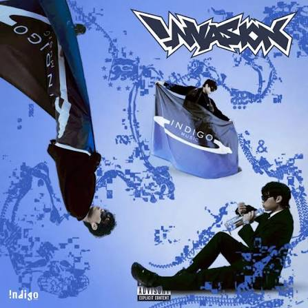

Playlist
Home
Profile
Playlist 🎶
Links
너 - SYSTEM SEOUL

HARARI FLOW - ksmartboi(feat.GGM Kimbo)
Burning slow-Remix - Molly Yam(feat.Sik K, GGM LIL DRAGON)
아름다워 - CHANGMO
IE러니 - YUMDDA
(C) 2026 Noh Eunseong. All rights reserved.